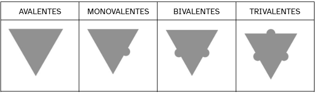
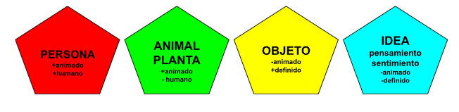
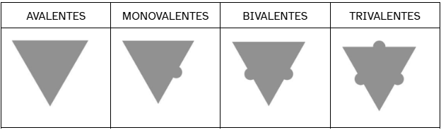
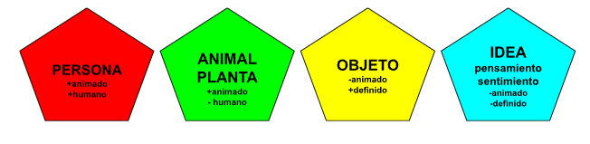
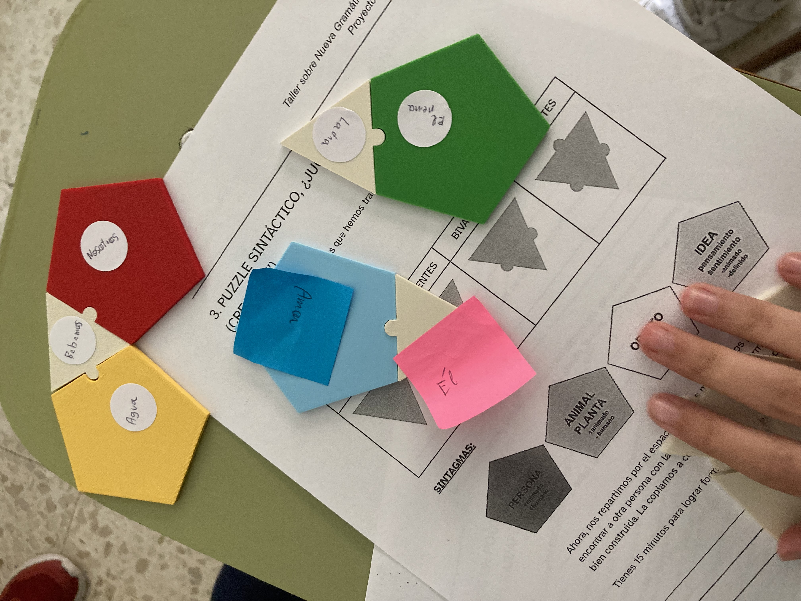

Recuerda
Según su valencia, clasificamos los verbos en:

Y los argumentos activados por el verbo pueden presentar distingos rasgos semánticos:

Según su valencia, clasificamos los verbos en:

Y los argumentos activados por el verbo pueden presentar distingos rasgos semánticos:

Ahora, nos repartimos por el espacio y vamos moviéndonos por la clase hasta encontrar a otra persona con la que nuestra ficha puede formar una oración bien construida. La copiamos y seguimos buscando.
Tienes 15 minutos para lograr formar tres oraciones. ¡Vamos!

Observa las oraciones que has formado y responde las siguientes cuestiones:
Puedes descargar las actividades de esta fase en formato doc para trabajar en clase.
Obra publicada con Licencia Creative Commons Reconocimiento Compartir igual 4.0